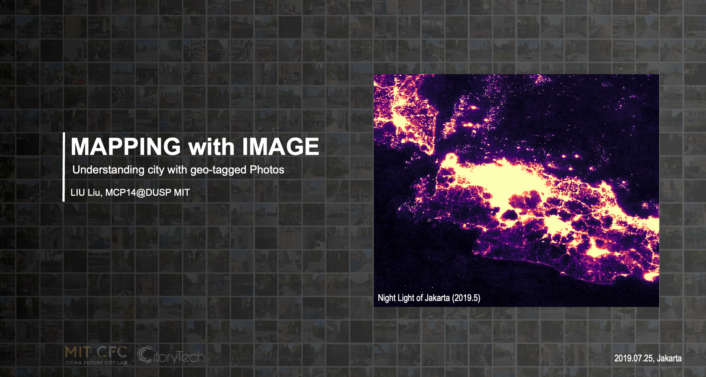

To obtain the slides view password, please contact me.
Data Benchmark for Multi-modality models
Date: Aug 22, 2024
Location: Lab 126 Sunnyvale, CA
This presentation covers 2 projects I conducted during my research internship at Amazon AGI. They are both related to benchmarks for Audio Generation, in which I highlighted some gaps in today’s AI-driven development. (slides are password protected.)

Urban Big Data in China
Date: May 8, 2024
Location: 4-370, Massachusetts Institute of Technology
This presentation explores my entrepreneurship journey, focusing on urban big data analytics in China. Specifically, I discuss four distinct types of data: open data, web-crawled data, purchased data, and geo-tagged visual data. For each category, I describe 2-3 datasets that I have worked with and detail specific research questions and case studies associated with them.
Sidewalk Ballet
Date: Mar 21-22, 2024
Location: School of Architecture and Planning, Massachusetts Institute of Technology
During the SPRING 2024 HPI–MIT WORKSHOP, we delivered the report about current progress in detecting social behaviors on sidewalks. Here is the poster of the project sidewalk ballet. In this project we explored a series of current on-the-shelf models and designed the pipeline of the entire work. More details will be release when our working paper is published, and will be updaed here.
Learning from ground floors
Date: Sep 22-23, 2023
Location: School of Architecture and Planning, Massachusetts Institute of Technology
The 2023 Rez de Ville: In Transition seminar will delve into the evolving dynamics of urban ground floors amidst modern societal, economic, environmental, and technological shifts and explore the implications of these changes on diverse urban populations. Here is the talk list. A quick brief of the case can be found here.
Mapping with Image
Date: Jul 26, 2023
Location: School of Architecture and Planning, Massachusetts Institute of Technology
A brief of my previous research and work. Due to the time limit, mostly is about urban imagery analysis. It is the application for the research work at Senseable City Lab. The process was smooth and successful.


Date: Oct 17, 2019
Location: Zhengzhou, China

Date: Jul 25, 2019
Location: Jakarta, Indonesia
My team is invited as a representative of FCIC to participate in the project initiation meeting on “Improving the Use and Sharing of Geospatial Information to Promote Resilient and Sustainable Development.” This event, hosted by the United Nations Economic and Social Commission for Asia and the Pacific (UN-ESCAP) and organized by the Indonesian National Institute of Aeronautics and Space (LAPAN). During this meeting, we engaged in vibrant discussions with representatives from Cambodia, Mongolia, Thailand, Kyrgyzstan, Indonesia, and experts from research institutions such as The Chinese University of Hong Kong, the Remote Sensing Institute of the Chinese Academy of Sciences, and the City University of Macau.


Experience with urban data
Date: Oct 12, 2022
Location: School of Architecture and Planning, Massachusetts Institute of Technology
A brief of my previous research and work. It’s a 45-min talk, the talk includes my previous data-driven research and practice. The audience are all City Form Lab members.
Seeing City
Date: May 14, 2019
Location: World Bank Beijing Office
It’s an 30 mins talk about recent projects from CitoryTech team. The talk covered a series of urban data research, practice in our exploration of understanding our city with images.
Date: Mar 11, 2019
Location: Faculty of Architecture, Hong Kong University
It’s an 1-hour talk about recent projects from CitoryTech team. The talk covered a series of urban data research, practice in our exploration of understanding our city with images. I also introduced the development of crowd sourcing tools.
StreeTalk Pitch
Date: Nov, 2017
Location: Shanghai
This is a 10-minute business plan presentation for our original project, StreeTalk. We were honored to receive the seed award and seed funding for CitoryTech.
Additionally, this project played a pivotal role in securing our first order from Daimler, through which we sold our safety maps, encompassing over 300 cities in China.
National Population Flow Analysis Based on 1 billion LBSN data
Date: Sep 26, 2016
Location: Shenyang
A presentation on the study of national population movements, utilizing the Tencent LBSN dataset, was delivered. For the first time, it showcased an analysis of urban clusters and the regional framework across the whole country.
A brief of the project can be found here.

GTFS and AFC Data Analysis
Date: Aug, 2013
Location: New York
This is a 30-minute presentation